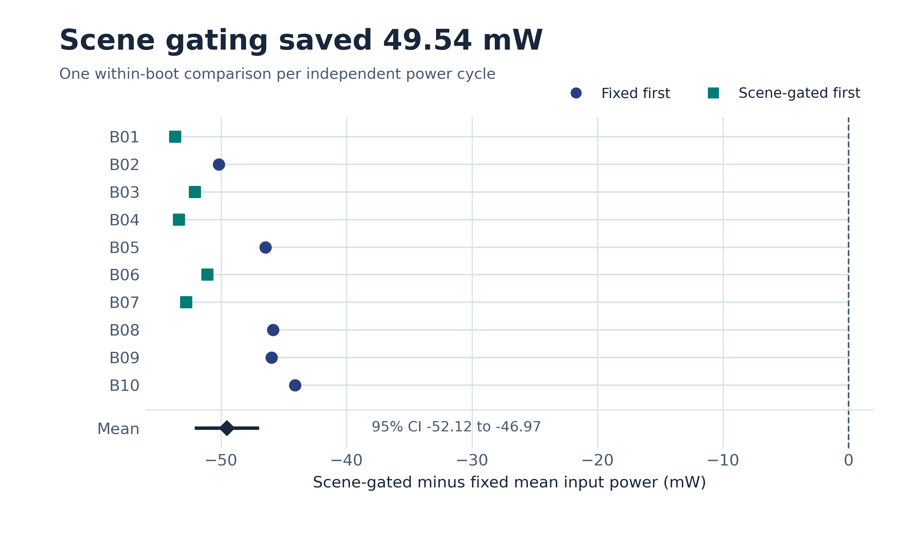
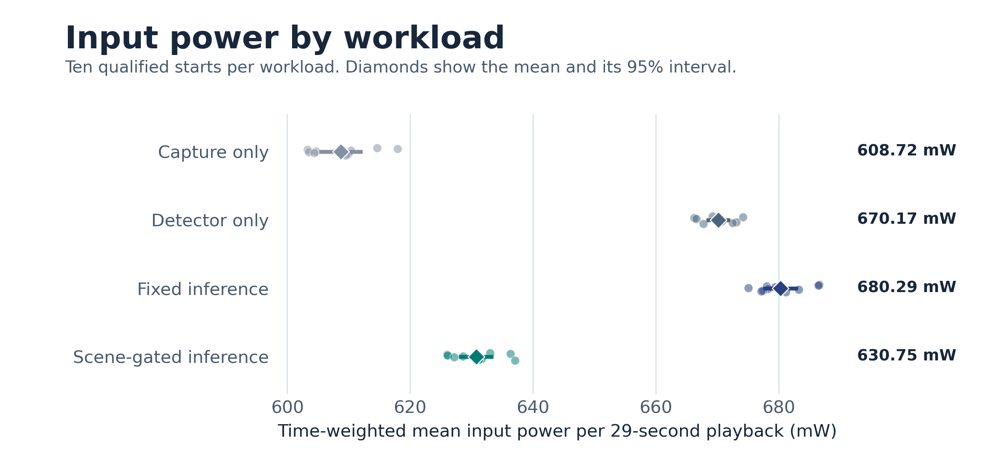
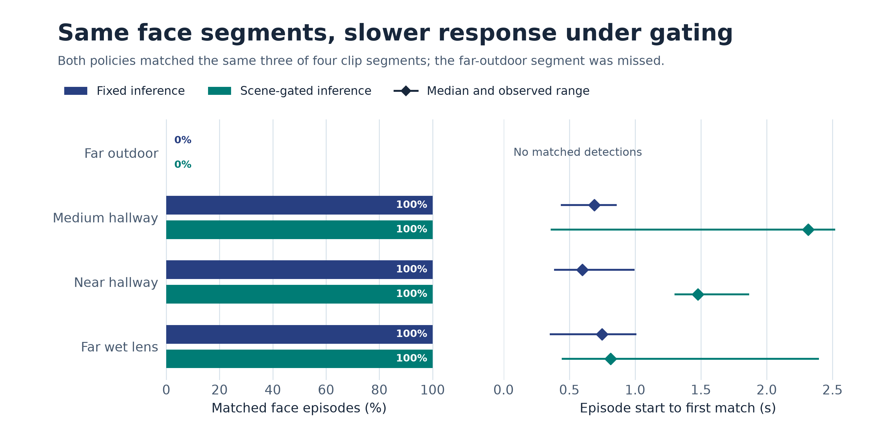
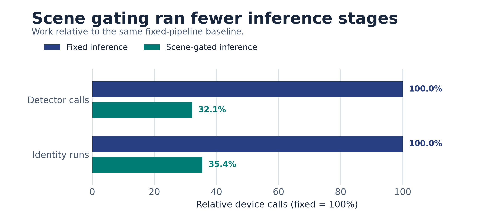
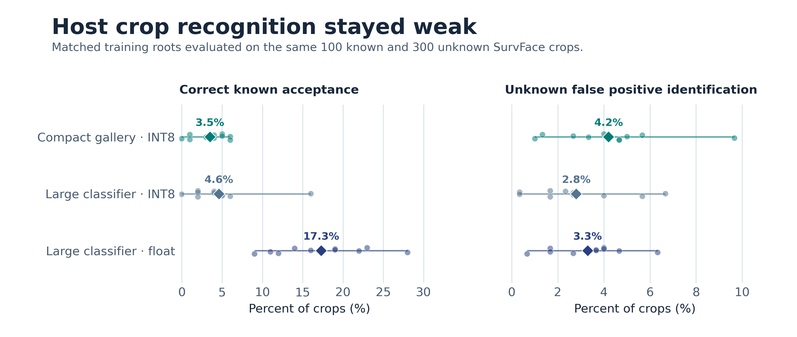
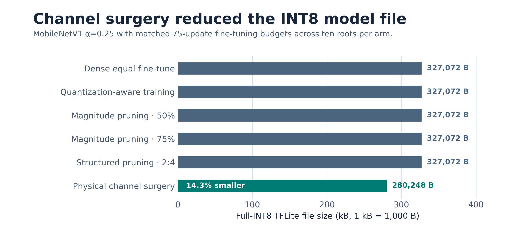

Abstract
A wearable camera can keep processing nearly identical frames between encounters. We implemented a scheduler that leaves the camera running and calls a face detector when grayscale scene statistics change or a periodic check is due. We compared scene-gated and fixed processing on one Arduino Nicla Vision using separate physical power cycles and the same 29-second optical replay in each condition. Mean USB input power fell from 680.29 to 630.75 mW, a paired saving of 49.54 mW (7.28%), with a 95% t interval of 46.97–52.12 mW. Both policies localized the same 75% of scripted face episodes and missed the far-outdoor episode on every replay. Median time to first matched detection rose from 0.65 to 1.38 seconds among matched episodes. The gated policy made 68% fewer detector calls. A separate USB test verified one saved photo per portrait encounter. The power result characterizes the tested board, meter, and replay. Identity inference ran with known-person acceptance disabled.
Research question and scope
Can a wearable microcontroller reduce camera-processing energy by adapting inference to the scene while preserving face encounters? We measure the resulting response-delay tradeoff. The embedded constraint is the combined cost of an awake camera, repeated detection, downstream inference, and the memory available to an on-device pipeline.
The original proposal included recognition of a small enrolled group, model quantization, and adaptive sensing. It also specified adaptive face detection as the fallback if reliable recognition proved impractical. The compact models executed, but their open-set recognition results were weak. We therefore evaluated scene gating using the same detector and small model under both full policies. The recognition and compression studies remain part of the evidence for that scope decision.
The final capability is a face-processing and encounter-review prototype with measured power, coverage, and response time. General enrollment, multi-person tracking, and IR night operation were outside the required demonstration.
System and controller
On-device pipeline
The Arduino Nicla Vision runs OpenMV 5.0.1 on an STM32H747. Its GC2145 camera supplies a centered 240 × 240 grayscale region from a QVGA frame. The native Haar detector produces a candidate face box. A valid crop is resized to 96 × 96 for a MobileNetV1-derived α = 0.10 INT8 embedding model with 64 output dimensions. The model file occupies 101,576 bytes. A separate load of the same model used a 43,008-byte tensor arena. Camera buffers, the Python runtime, and other allocations use additional memory. Arduino hardware documentation, OpenMV documentation
- Capture240 × 240 grayscale
- ScheduleFixed or scene-gated
- DetectNative Haar face box
- Crop96 × 96 input
- EmbedINT8, 64 dimensions
The host pairs each camera JPEG with its device result using boot ID, frame ID, and a JPEG digest. The localhost dashboard displays the associated image, detector region, crop, model output, timing, and errors. With photo saving enabled, it stores one image per confirmed encounter and avoids repeated saves during a continuous face hold. Photo saving was disabled during the power experiment.
R19 executes the identity stage with automatic known-person acceptance disabled. The gallery's Person 1–5 and Other categories support explicitly marked manual assignments.
Fixed and scene-gated policies
Both full policies use the same configured 250 ms processing interval, camera settings, image-quality check, native Haar detector, and embedding model. The camera stays awake and the IMU motion gate stays disabled. The fixed policy runs detection on every eligible frame.
The scene-gated policy compares the current grayscale mean and standard deviation with the frame at the most recent detector call. A mean change of at least 8 intensity levels or a spread change of at least 6 triggers a check after a 500 ms holdoff. The change latch clears once the differences return to 4 and 3 or less. The first eligible frame and roughly 2 seconds without a detector call also trigger a check. Each detector call refreshes the reference. Actual execution depends on frame availability and image quality.
The dashboard's fast live policy uses a separate configuration. The study's power and latency results belong to the fixed and scene-gated settings above.
Experimental design
Bench and repeated workload
A fixed display replayed the 29-second power-bodycam-v1 clip through the Nicla's physical camera. Four scripted face segments alternated with four quiet intervals. The face segments were far outdoor, medium hallway, near hallway, and a far segment with digital degradation approximating a wet lens. The optical replay held the displayed scenes constant while exercising the actual sensor and firmware.
Supply and logging path
Windows laptop and Belkin USB-C data hub → FNIRSI C2 inline meter → Nicla Vision facing the replay display. A separate connection to the meter's PC/HID port logged voltage and current. Power was cut downstream of the meter between qualified blocks.
Each accepted block contained four workloads on the same R19 boot. Capture-only and detector-only isolated the earlier stages. Fixed and scene-gated full processing used the same downstream model. Separate physical power cycles produced distinct board boot IDs and meter records. The order of the full policies was balanced across accepted blocks.
Qualification and exclusions
Pre- and post-block checkerboard checks required optical alignment within a 3-pixel corner tolerance. Meter qualification required valid packet decoding, in-window readings of 4.75–5.25 V and 0.05–0.20 A, and report gaps no longer than 200 ms. Playback checks verified the intended clip and agreement of UTC and monotonic boundaries within 100 ms. Frame checks required at least two linked observations per episode and 90% linkage for the full pipelines.
All four windows had to qualify for a block to enter the primary analysis. The accepted full-pipeline windows achieved 100% preview linkage. Maximum accepted corner drift was 2.59 pixels. The ledger retains 28 excluded attempts, including preflight attempts, geometry failures, anomalous meter reports, and an interrupted video run. Attempt ledger CSV
Power and quality metrics
For each HID report, the replay averages its four voltage–current products, interpolates power at playback boundaries, and integrates using the trapezoidal rule against exact host UTC receipt timestamps. Average input power is integrated energy divided by the observed window duration. The primary effect is the mean of the within-block fixed-minus-gated differences.
N is the number of qualified blocks. A two-sided Student t interval summarizes the paired block differences. Percentage saving divides the paired mean reduction by the fixed mean. The independent raw replay reproduced all accepted window means within 4.0 × 10−9 W.
A face episode was matched if a linked observation contained one predicted region with intersection-over-union of at least 0.30 against the projected camera-space annotation. Delay runs from scripted episode onset to the first matched box. Its median includes matched episodes. A model-stage match additionally required crop coverage of at least 0.80 and completed inference. Quiet-interval detections were recorded separately.
Power, coverage, and response
| Workload | Mean power | Mean observed energy |
|---|---|---|
| Capture only | 608.72 mW | 17.66 J |
| Detector only | 670.17 mW | 19.44 J |
| Fixed full pipeline | 680.29 mW | 19.73 J |
| Scene-gated full pipeline | 630.75 mW | 18.30 J |
The paired comparisons favored gating
The paired mean saving was 49.54 mW (7.28%), with a 95% interval of 46.97–52.12 mW. Individual savings ranged from 44.10 to 53.64 mW. Over a standardized 29-second interval, the power difference corresponds to 1.44 J saved, with an interval of 1.36–1.51 J. The table reports actual integrated energy means.




Savings averaged 46.51 mW in the fixed-first blocks and 52.58 mW in the gated-first blocks. This post hoc split suggests that position within a block or the preceding workload can matter. Both orders favored gating, and the primary result weights every accepted block equally.
The same episodes, with slower response
Each full policy localized 75% of scripted face episodes. The same three of four segments matched across the physical starts. Both policies consistently missed the far-outdoor segment. Median time to first match increased from 0.645 to 1.383 seconds among matched episodes, a difference of approximately 0.74 seconds between the two medians.


Avoided work and periodic checks
Detector calls fell by 67.9%, and embedding calls fell by 64.6%. All scheduled identity inferences completed with known-person acceptance disabled. The scene gate skipped detection on 579 eligible observations. Of its 160 detector calls in the playback windows, 103 were periodic checks and 57 were scene-change checks.


Periodic checks supplied 60% of first gated matches, and scene-change checks supplied 40%. Their conditional median delays were 1.786 and 0.677 seconds. These descriptive groups mix check type with episode conditions. An ablation would be needed to estimate the independent benefit of the periodic path. Quiet-interval detections occurred in 5% of the fixed-policy quiet episodes and 2.5% of the gated-policy quiet episodes.
Training and model compression
Data and evaluation roles
The main identity benchmark used team-supplied SurvFace-derived 96 × 96 grayscale crops, with five known identities and an Other group. Its frozen manifest contains 1,350 rows spanning training, stopping, calibration, and development roles. Known identities use disjoint image groups across roles. Other identities are disjoint across training, calibration, and development. The five known identities had earlier exploratory exposure, which limits claims about a pristine final evaluation.
Olivetti was used as a separate sanity study. WIDER FACE supplied annotated full scenes for learned face-detection experiments, and PASS supplied scene negatives. LFW supplied historical screen-photo and host-alignment diagnostics. Original images and private camera captures stay outside the public repository. The transformed team crop archives are identified by hash, with restoration tooling and provenance notes. Dataset sources, exact hashes, and restoration
Recognition results motivated the fallback
The held-out host benchmark contained 100 known crops from the five roster identities and 300 unknown crops from 50 other people. Each route used ten training initializations and its own calibrated open-set rule on the same evaluation crops. Correct known acceptance requires accepting the crop and selecting its correct identity. Unknown false positive identification rate counts unknown crops assigned to any known identity.
| Route | Correct known acceptance | Unknown FPIR |
|---|---|---|
| Compact INT8 gallery | 3.5% | 4.2% |
| Larger INT8 classifier | 4.6% | 2.8% |
| Larger float classifier | 17.3% | 3.3% |


An earlier crop diagnostic kept a MobileFaceNet scoring model fixed and changed the crop route on reused source frames. FOMO-centered crops correctly accepted 4/15 known evaluation groups, and a YuNet-aligned route accepted 14/15. Each route had its own gallery and crop-specific calibration, and the groups had appeared in development. This host comparison motivated explicit box and crop checks in the final device evaluation.
Thirteen optimization arms
We compared 13 optimization arms over ten matched training initializations on a development workload. For the α = 0.25 classifier, ordinary pruning and quantization-aware training retained a serialized INT8 size of 327,072 bytes in the tested export path. Physical channel removal reduced it to 280,248 bytes, a 14.3% reduction.


Physical channel removal decreased estimated multiply–accumulates by 303,104. Estimated peak activation memory remained 75,280 bytes, while mean unknown FPIR rose from 3.2% to 5.2% on development crops. These are host exports and static estimates. The power experiment used the separately benchmarked compact gallery model.
The repository preserves training, full-integer export, calibration, pruning, clustering, distillation, evaluation, and artifact-verification workflows. Training and compression reproduction guide
Prototype, demonstration, and feedback
The USB functional test displayed three public portraits across ten separated presentations. It saved one image per presentation, zero images during eleven blank intervals, and no duplicate during a 40-second continuous hold. Every saved image matched the corresponding device observation by boot ID, frame ID, and JPEG hash. In those observed phases, 411 of 413 preview JPEGs linked to results.
A later screen rehearsal saved four photos across four separated encounters, with no extra photo from a held portrait or a blank interval. On-board storage and USB import were also exercised with host serial detached while USB continued supplying power. Repeating an import added zero photos. A functional battery-powered boot, two separated offline encounters, and import after reconnection remain to be rehearsed.
Response to checkpoint feedback
The discussant group asked whether the earlier 4/15 result used the Nicla's detector settings and suggested a same-frame detector comparison of board FOMO, host FOMO, and YuNet across distance, lighting, and blur. That result came from the host crop route and left the device bottleneck unresolved.
The final experiment added capture-only and detector-only controls and held the detector, camera settings, and small model constant between the full policies. We score matched face regions and response delay alongside power, and report the shared far-outdoor failure. The full three-detector stress comparison remains open. This narrowing follows the recognition-failure fallback in the submitted proposal.
Discussion and limitations
The reduction in detector work was much larger than the proportional reduction in board power. The capture-only control shows that the awake camera and runtime already draw most of the measured input power. Periodic checks also produced more detector calls than scene-change checks. A future interval sweep could quantify the tradeoff between response delay and avoided work.
- Experimental unit. Separate physical starts characterize repeatability for one board, one meter, and one replay. Face episodes are repeated presentations of four source segments.
- Shared failure. Both policies missed the far-outdoor segment on every replay. This test does not isolate distance from the segment's other properties.
- Instrument limits. The FNIRSI meter had no independent reference calibration. Its anomalies contributed to exclusions. The paired interval captures variation across accepted blocks, with absolute calibration and selection effects outside that interval.
- Order sensitivity. The post hoc order split differed by approximately 6 mW. Both accepted orders favored gating, but carryover deserves a dedicated test.
- Recognition and wearability. Reliable camera-domain identification and battery life require their own validation. Manual gallery labels are operator assignments. The untethered boot rehearsal is pending.
For this controlled workload, keeping the camera awake while gating detector calls saved 7.28% input power and preserved the same matched face episodes, with approximately 0.74 seconds more median delay among matched detections. The USB prototype also captured and retained one verified photo per portrait encounter.
Reproducibility and artifacts
The public source includes the R19 device code, full deployed model files, compiled modules, configuration and hash manifests, dashboard, data-preparation code, and experiment recipes. Fitted training artifacts and raw meter records are attached to the research-assets release. The raw archive preserves accepted and excluded attempts, playback boundaries, instrument settings, frame-linkage and optical receipts, and replay scripts.
- Source and setup instructionsCamera application on Python 3.12. Model training uses its own pinned environment.
- Hash-pinned research assetsFitted models and raw R19 power return.
- Measured release fingerprintsModels, configuration, compiled runtime, and rollback identity.
- Paper sourceLaTeX, bibliography, figures, and tables for local builds or Overleaf upload.
Replay the power result
From the repository root, restore and verify the 41,332,455-byte evidence archive, extract it, and replay its ledger.
python3 tools/fetch_power_evidence.pyExtract the verified download and replay its measurement ledger using the power reproduction guide. The guide also links the exact optical workload, episode annotations, and Windows bench procedure for a fresh physical run.
Expected output reproduces the qualified paired comparisons and mean gated-minus-fixed power of approximately −0.04954353 W. The fetcher checks archive SHA-256 66f9d14dd4b75b87d79d974cd28dc17492c5f3625db6edbc3255911e347e2356.
After camera setup, tools/check_repository.py checks complete model sizes and hashes, source-to-compiled-module consistency, host behavior, and dashboard controls. The final paper source includes a separate replay of the trigger and order summaries. Full power reproduction guide
References
- NoScope. Kang, Emmons, Abuzaid, Bailis, and Zaharia. “Optimizing Neural Network Queries over Video at Scale.” PVLDB, 2017. Paper
- ADMN. Wu, Yuan, Yang, Kaplan, and Srivastava. “A Layer-Wise Adaptive Multimodal Network for Dynamic Input Noise and Compute Resources.” NeurIPS, 2025. Proceedings
- Viola and Jones. Rapid Object Detection Using a Boosted Cascade of Simple Features. CVPR, 2001. Paper
- Howard et al. MobileNets. “Efficient Convolutional Neural Networks for Mobile Vision Applications,” 2017. Paper
- Cheng, Zhu, and Gong. Surveillance Face Recognition Challenge, 2018. Paper
- Arduino Nicla Vision. Hardware documentation. Reference
- OpenMV 5.0.1. Nicla Vision runtime documentation. Reference
- Zales. TinyODOM-EX. UCLA ECE M202A final project, Fall 2025. Project report
- Context-Aware Hybrid Object Detection for Autonomous Vehicle Perception. UCLA ECE M202A final project, Fall 2025. Project report